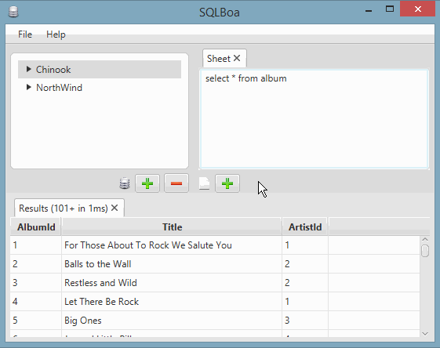

About
A sql editor tool developed with developers in mind (rather than db administrators). This means that the focus is more on fast iteration on multiple sql statements across multiple connections rather than db design.
High Level Features:
- Cross platform (Windows, OSX, and Linux)
- Multiple sql statements live in the same text input area (called Sheets)
- Keyboard shortcuts for primary actions (e.g. executing a statement)
- SQL parameter support
- Multiple concurrent connections
- Multiple result sets

Status
SQLBoa is in alpha, send comments and feature requests to trevor@croftfamily.net
Requirements
Windows/OSX/Linux, Java 8